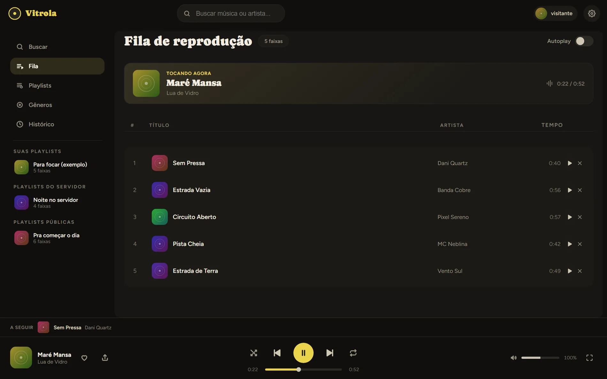
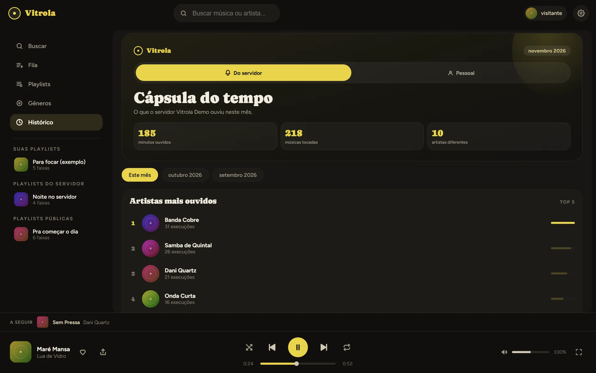
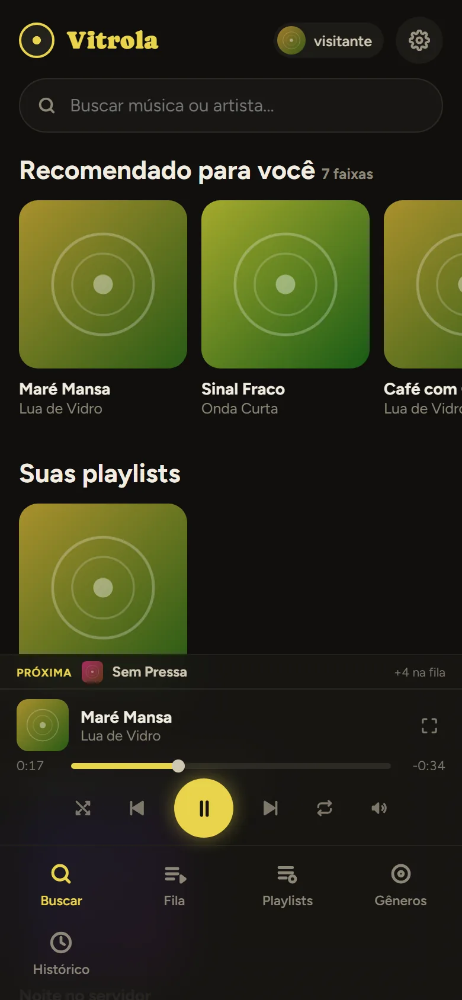

Busca por nome ou artista
Resultados do Spotify, com capa, artista e duração certinhos. Sem chaves, a busca usa o YouTube Music sozinha.
Busca, fila com autoplay e playlists — tocando direto no canal de voz. Entre com o Discord e comece a tocar.
Sem login de verdade: é só uma demonstração, nada é enviado ao Discord.
Controle o bot pelo navegador, sem decorar comandos. Cada servidor tem o próprio player, a própria fila e o próprio volume.
Resultados do Spotify, com capa, artista e duração certinhos. Sem chaves, a busca usa o YouTube Music sozinha.
Reordene arrastando, remova faixas e ligue o autoplay: quando a fila acaba, entram músicas parecidas.
Privada, do servidor ou pública. Importe do Spotify e do YouTube Music por link. Só o dono edita.
Uma retrospectiva mensal do servidor ou só sua: minutos ouvidos, artistas mais tocados e um cartão para compartilhar.
Um player independente, que toca no próprio navegador, sem precisar entrar em nenhum canal de voz.
Gera uma imagem vertical da música atual, pronta para postar nos stories ou mandar para os amigos.
Telas reais da demonstração. Dá para abrir e mexer em tudo, sem instalar nada.




A tela inicial já mostra o que importa: o que você mais ouve, suas playlists e gêneros para explorar.

A interface se adapta à tela pequena: barra de navegação embaixo, player sempre à mão e a próxima música à vista. Os amigos podem abrir o painel de outro computador ou do celular.
No Windows, o instalador resolve o que falta. Você só precisa de uma conta no Discord.
Baixe o projeto no GitHub e dê dois cliques em Iniciar.bat. Ele instala o que faltar, inclusive o Node.js.
O navegador abre uma tela de configuração que guia o preenchimento do token do bot e do Client Secret.
Clique em Convidar o bot para o meu servidor, escolha o servidor e autorize.
Abra o Vitrola, entre com o Discord e escolha a música. O bot entra no canal de voz onde você estiver.
Escolha quem pode ver e tocar cada playlist. E como o bot roda no seu computador, nada passa por um servidor central: seus dados ficam com você.
Só você vê e toca. Ideal para a sua seleção pessoal.
Todos os membros do servidor onde ela foi criada podem tocar.
Qualquer pessoa logada pode ver e tocar. Só o dono edita.
Não. O Vitrola é gratuito e de código aberto, sob licença MIT. A busca pelo Spotify é opcional; sem ela o bot usa o YouTube Music.
Sim, enquanto quiser música. Cada pessoa roda o próprio bot no próprio computador e a janela do Iniciar.bat precisa ficar aberta. Para ficar 24/7, dá para hospedar numa máquina que fique sempre ligada, como explicado na documentação.
Quem só quer ouvir no Discord nem precisa do painel. Para os amigos controlarem o bot de outro computador, use um túnel gratuito da Cloudflare. O passo a passo está em Amigos de outro computador.
Não. Ela roda inteira no seu navegador, com músicas fictícias e áudio gerado na hora, só para você ver a interface funcionando. Nada é enviado ao Discord.
O instalador fácil (Iniciar.bat) é para Windows 10 e 11. Em outros sistemas, dá para rodar manualmente com Node.js: veja Para desenvolvedores.
O áudio é extraído com o yt-dlp, o que não é a forma oficialmente permitida pelos termos do YouTube. Por isso o projeto é educacional, para uso pessoal com amigos, e não deve ser vendido nem oferecido como serviço. Leia Uso responsável.
Abra a demonstração agora, sem instalar nada, ou baixe o projeto e rode o seu próprio bot.